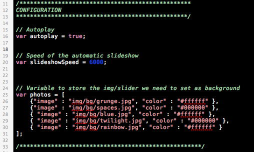

“kroft” Documentation by “ansimuz v1.0
“Kroft TEMPLATE”
Created: 14/09/2011
By: Luis Zuno aka ansimuz
Email: luis@luiszuno.com
Thank you for downloading my theme. If you like this file you may like some of my premium items found on themeforest portfolio Visit portfolio. Thanks so much!
Table of Contents
HTML - top
This theme is a fixed layout theme made in HTML 5 its perfect for creative's showcase. It contains 6 different page layouts: front page, regular page (with and without sidebar), blog posts, gallery, portfolio posts, and contact page.
HTML STRUCTURE
The Site structure is composed of a block for the background image that is stretchable to the size of the browser window on which float the content , header and footer areas.
FILE LIST
This download package contains all the necessary HTML, CSS, JS and Image files necessary to build a complete site. Also it includes this help file and some editable PSD files in case you need to customize the graphic elements.
TOOLTIPS
For the tooltips i am using a javascript library called poshytip its very easy to set up. The default browser tooltip that displays the value of the title attribute is replaced with a "poshier" version just add a title text and a class of poshytip.
Example
<a href="#" title="I am a tooltip" class="poshytip">Tool tip</a>
<img src="image.jpg" title="I am a tooltip" class="poshytip" alt="Image" />
CONTACT FORM
There are 2 files nedded filed needed for the FORM VALIDATION (js/form-validation.js) and the PHP (send-mail.php) that actually sends the data .
The HTML

Configuring the email recipients and data
To set the sender and the recipients just change the value for the hidden input values inside the contact.html.

Form validation
Form-validation.js This is the javascript validation for the fields.
How to add fields to the contact form:

Background slider configuration - top
Edit your "js/slider.js" and around line # 15 you will see the options to configure your "background slider":
- autoplay. Set it to true if you want to auto play your background slides.
- slideshowSpeed. Enter the speed in miliseconds between slides for example 1000 equals to one second.
- phtos. This is an array of values for the slides. Enter an absolute path for the image value and hexadecimal value for the background color.

CSS Files and Structure - top
This theme uses several css files contained in the css folder.
List of css files under the CSS folder:
- comments.css
- ie-hacks.css
- jquery.tweet.css
- reset.css
- social-icons.css
- style.css
- superfish.css
Image Files - top
All the graphic elements for the entire theme are contained at the "img" folder. The mockup images used to feed the site are contained at the "img/dummies" folder. All the background images are stored at the "img/bg" folder. Here's the list of available background images:
- blue.jpg
- grunge.jpg
- rainbow.jpg
- spaces.jpg
- twilight.jpg
JavaScript - top
All the pages link the neccessary js files inside the "head" tag of the document. If you need to modify the behavior from a certain jquery element open the "js/custom.js" file. where you can alter the parameters of some of the js elements.
PSD Files - top
The psd files are not included on this download package, i will post a download package containing the PSD files on my site: luiszuno.com
Sources and Credits - top
I've used the following images, icons or other files as listed.
JAVASCRIPT
- jQuery http://jquery.com/
- jqueryui . Jquery ui Home page.
- jQuery Easing Plugin http://gsgd.co.uk/sandbox/jquery/easing/
- PrettyPhoto http://www.no-margin-for-errors.com/projects/prettyphoto-jquery-lightbox-clone/
- Superfish http://users.tpg.com.au/j_birch/plugins/superfish/
- Google fonts api http://fonts.googleapis.com/
- Poshytip http://vadikom.com/tools/poshy-tip-jquery-plugin-for-stylish-tooltips/
- Tweet http://tweet.seaofclouds.com/
- Background Slider http://www.marcofolio.net/
IMAGES
- Social icons by premiumpixels.com
Once again, thank you so much for downloading this theme. I have more free files at this link. If you are looking for premium items visit my Themeforest portfolio here.
Note. I don't offer support on free files.
ansimuz